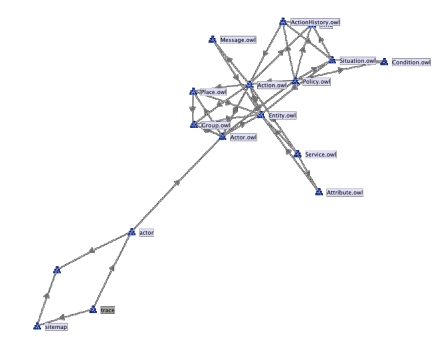

UCIAD: Using, refining, customising and reusing ontologies
Ontology modelling is a never ending task. Elements constantly need to be corrected and added
to cover more and more cases in a way as generic as possible. It is even more the case in UCIAD
as the approach is to create the ontology depending on the data we need to treat. Therefore, as
we will progressively be adding more data from different sources, including server logs from
different types of web sites, activity logs from systems such as VLEs or video players, the
ontologies will evolve to include these cases.
Going a step further, what we want to investigate is the user-centric analysis of activity data. The
ontologies will be used to provide users with views and analysis mechanisms for the data that
concern their own activities. It therefore seems a natural next step to make it possible for the
users to extend the ontologies, to customize them, therefore creating their own view on their own
data.
Reusing existing ontology
When dealing with data and ontologies, reuse is generally seen as a good practice. Apart from
saving time from not having to remodel things that have already been described elsewhere, it also
helps anticipating on future needs for interoperability by choosing well established ontologies that
are likely to have been employed elsewhere. We therefore investigated existing ontologies that
could help us define the notions mentioned above. Here are the ontology we reused:
- The Friend of a Friend (FOAF) ontology is commonly used to describe people, their connections with other people, but also their connections with documents. We use FOAF in the Actor Ontology for human users, and on the Sitemap Ontology for Web pages (as Documents).
- The Time Ontology is a common ontology for representing time and temporal intervals. We use it in the Trace Ontology.
- The Action ontology defines different types of actions in a broad sense, and can be used as a basis for representing elements of the requests in the Trace Ontology, but also as a base typology for the Activity ontology. It itself imports a number of other ontologies, including its own notion of actors.
The graph representing the dependencies between the UCIAD ontologies and others is
represented below.

While not currently used in the base ontologies, other ontologies can be considered at a later
stage, for example to model specific types of activities. These include the Online Presence Ontology (OPO), as well as the Semantically- Interlinked Online Communities ontology (SIOC)
.
Identifying concepts and their relations
The first step in building our ontology is to identify the key concepts, i.e., the key notions, that
need to be tackled, bearing in mind that the ultimate goal is to understand activities. The main
concepts to be considered are therefore the ones that support the concept of activity. Activities
relate to users, but not only. The system relies extensively on website logs as sources of activity
data. In these cases, it is possible to investigate requests both from human users and from robots
automatically retrieving and crawling information from the websites. The server logs in question
represent collections can be seen as traces of activities that these users/robots are realising on
websites. therefore it is necessary to model these other aspects, which correspond to actions that
are realised by actors on particular resources. These are the three kinds of objects that, in the
context of Web platforms, the system to models, so that they can be interpreted and classified in
terms of activities. The project therefore proposes four ontologies to be used as the basis of the
work in UCIAD:
- The Actor Ontology is an ontology representing different types of actors (human users vs robots), as well as the technical setting through which they realise online activities (computer and user agent).
- The Sitemap Ontology is an ontology to represent the organisation of web pages in collections and websites, and which is extensible to represent different types of web pages and websites.
- The Trace Ontology is an ontology to represent traces of activities, realised by particular agents on particular web pages. As the current focus is on HTTP server logs, this ontology contain specific sections related to traces as HTTP requests (e.g., methods as actions and HTTP response code). It is however extensible to other types of traces, such as specific logs for VLEs or search systems.
- The Activity Ontology is intended to define particular classes of activities into which traces can be classified, depending on their particular parameters (including actors and web pages). The type of activities to consider highly depends on the systems considered and to a certain extent on the user. The idea here is that specific versions of the ontology will be built that fit the specific needs of particular systems. It is the possible to extract the generic and globally reusable part of these ontologies to provide a base for an overarching activity ontology. Ultimately, the idea in UCIAD is that individual users will be able to manipulate this ontology to include their specific view on their own activities.